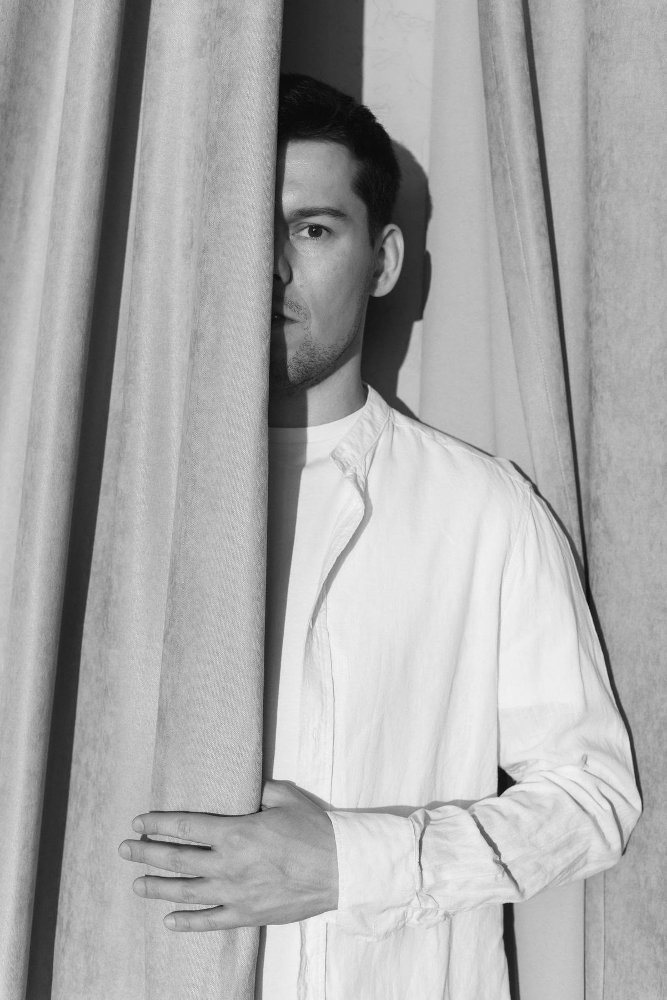
Многостраничный сайт ведущего свадеб и корпоративов · arapovtimofey.ru
01
Сделать сайт свадебного ведущего, который за несколько секунд объясняет, чем Тимофей отличается от других ведущих, и доводит пару до заявки.
Главный страх пары, который нужно снять
«Наймём яркого ведущего с микрофоном, и свадьба будет про него».
02
Провела созвон, на котором Тимофей прошёл по каждому блоку будущего сайта. Записала его правки, ценности и реальные истории с мероприятий.
03
Разрозненные правки со встречи я разложила в прототип: порядок блоков, задача каждого блока и черновые тексты. Дизайн начался только после структуры.
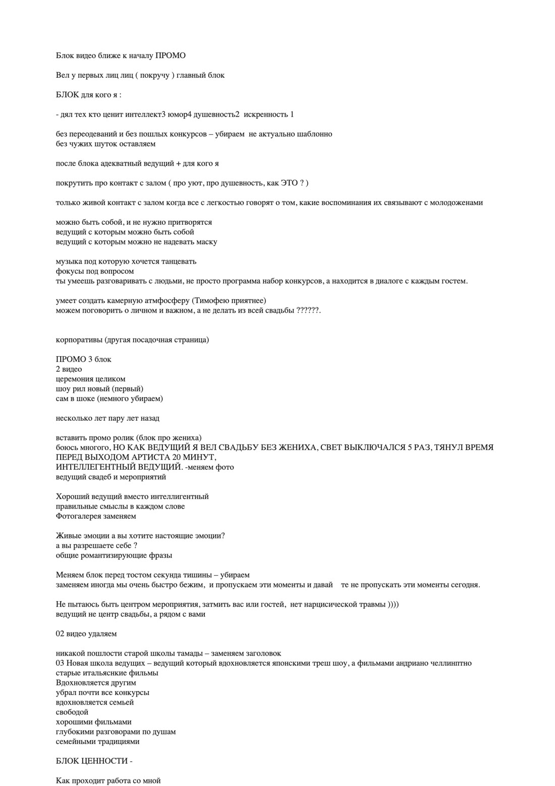
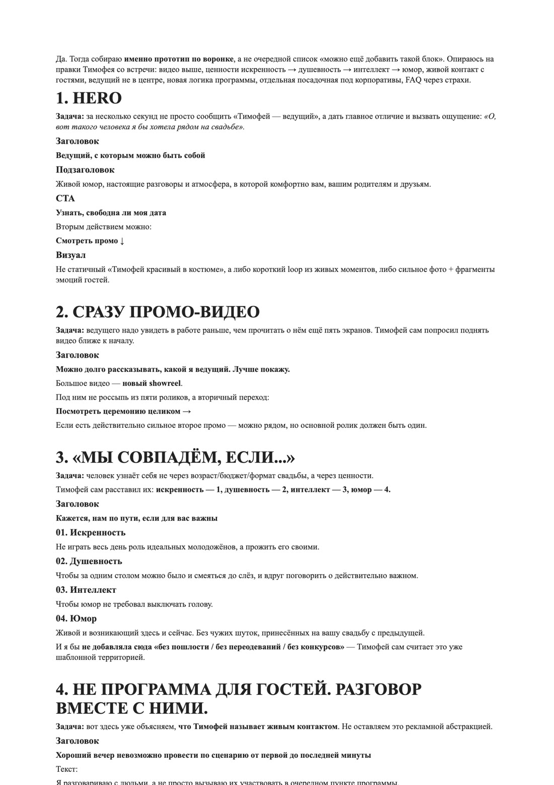
04
Обычный сайт ведущего идёт так: фото, программа, конкурсы, цена. Я построила страницу на вопросах, которые пара задаёт себе сама: от первого взгляда до заявки.
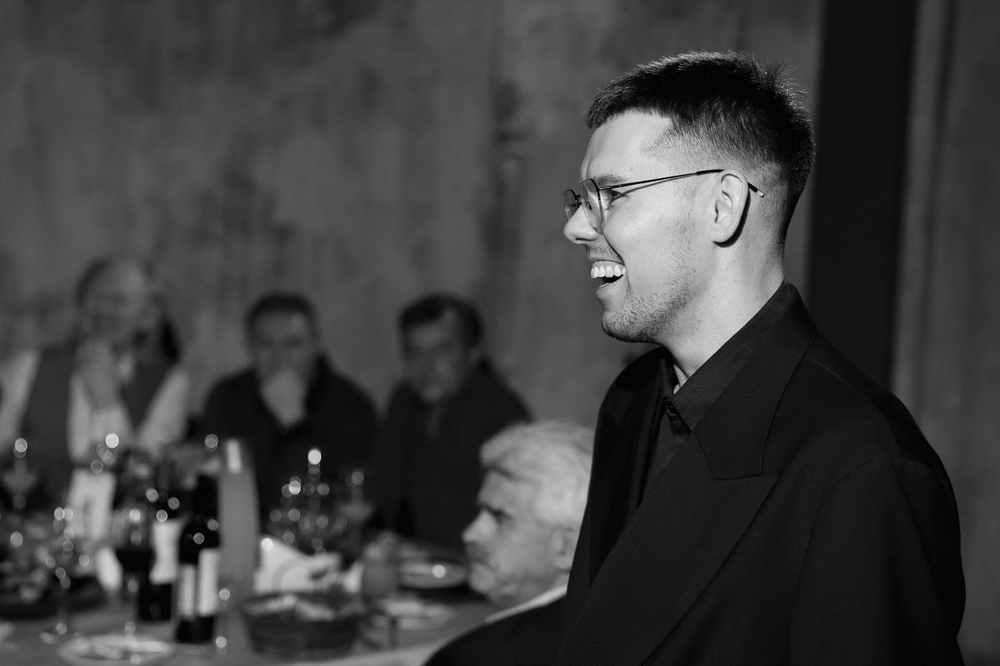
05
«Ведущий, с которым можно быть собой»
Конкуренты обещают «весело» и «сто программ». Я отстроила Тимофея от них через живой разговор вместо конкурсов, юмор без пошлости и ведущего, который не в центре внимания.
06
Ведущего нужно увидеть в работе раньше, чем прочитать о нём. Поэтому шоурил стоит вторым блоком, сразу после первого экрана.
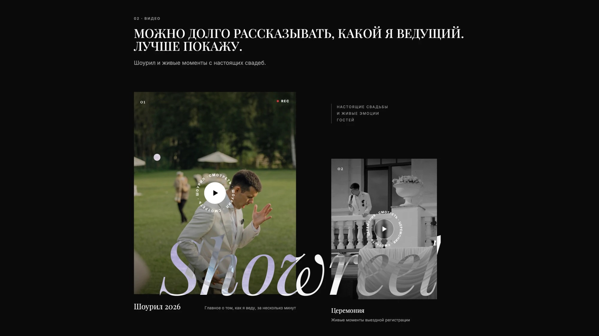
07
Истории из практики Тимофея я превратила в ответ на вопрос «а если что-то пойдёт не по плану?».
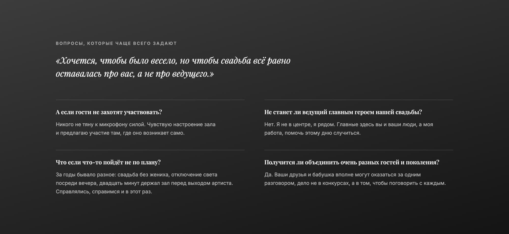
08
После свадебного сайта Тимофей вернулся со вторым заказом. Паре и компании нужны разные доводы, поэтому я сделала для компаний отдельную страницу, а не блок на главной.
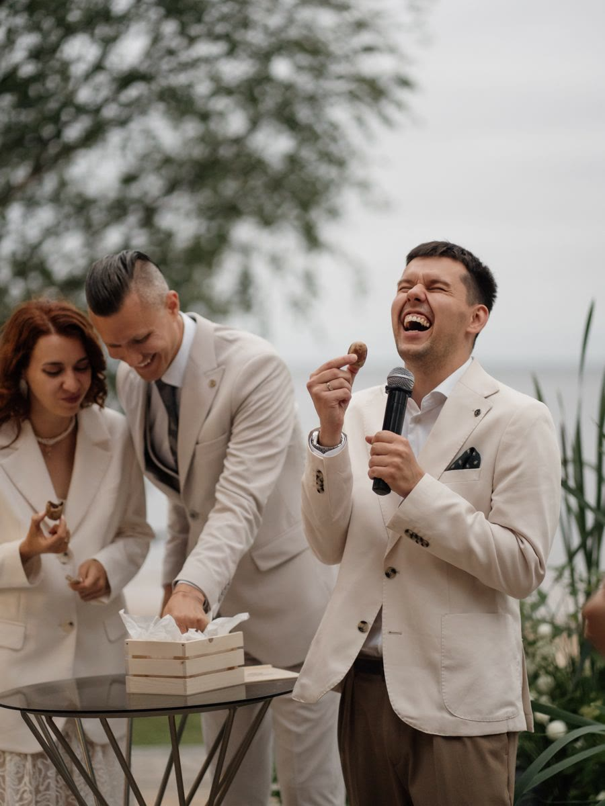
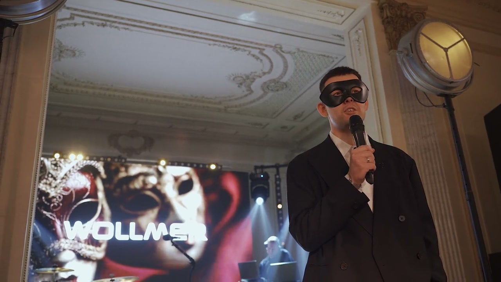
09
Разобрала 11 сайтов ведущих и агентств из выдачи: первый экран, доказательства, цена, кнопки. Верх выдачи занимают каталоги, где ведущих сравнивают по цене. Личной странице нужно за секунды объяснить, чем она лучше карточки в каталоге, и ответить на вопросы компании, о которых молчат конкуренты.
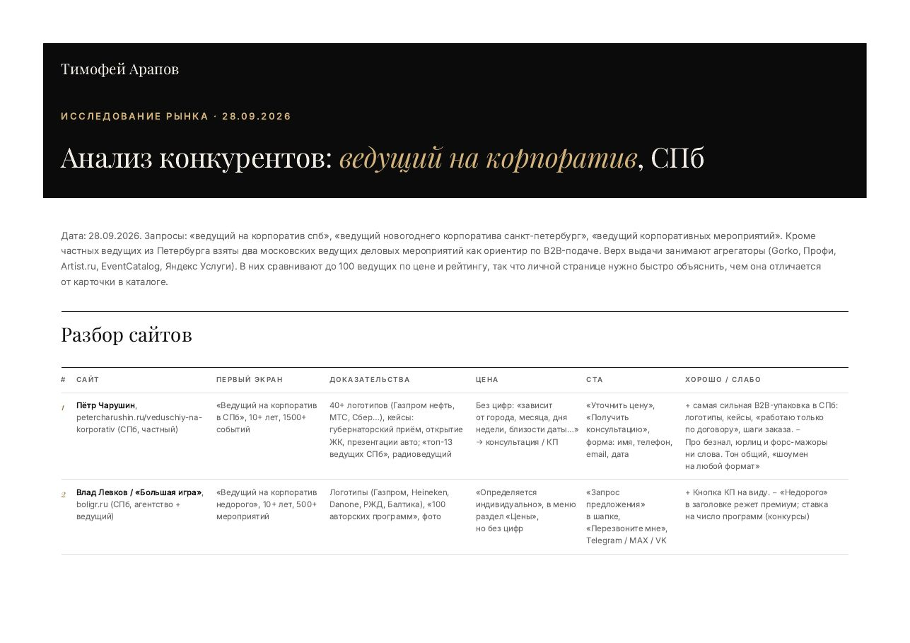
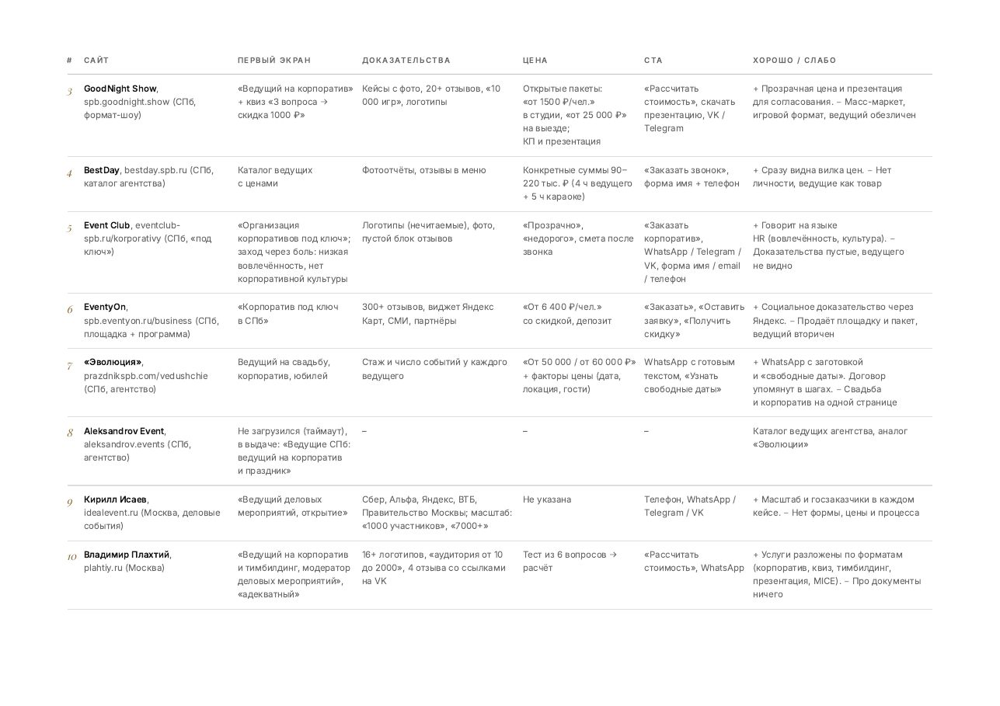
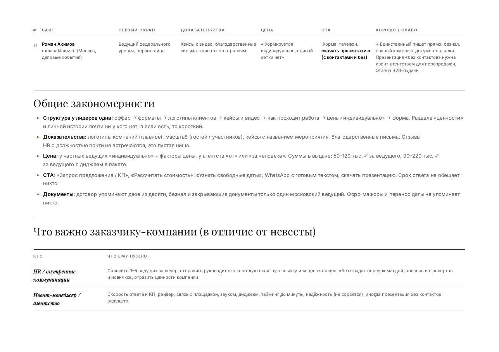
10
«Вечер, за который HR не будет неловко»
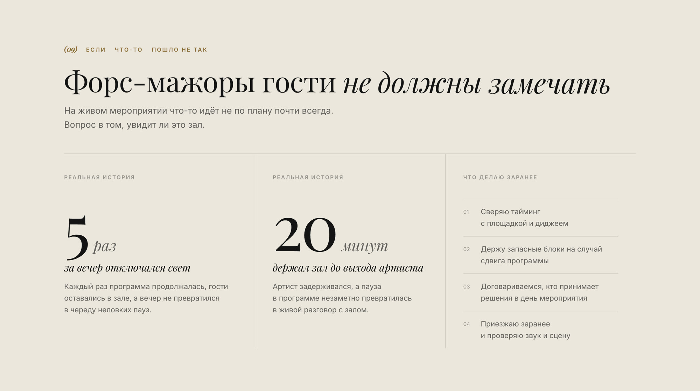
11
Без «недорого» и цен за человека, как у конкурентов. Вилка цены, от чего она зависит, договор, предоплата и чек: всё, что компании нужно для согласования.
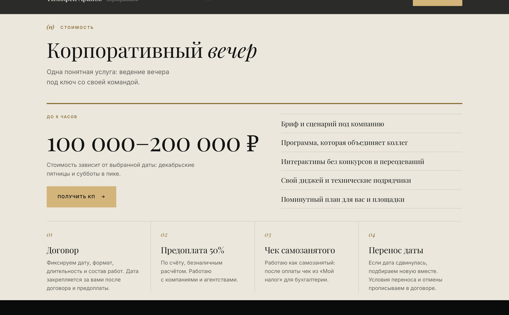
12
Обе страницы собраны отдельно под телефон: крупный текст и нижнее меню, кнопка связи всегда под рукой.
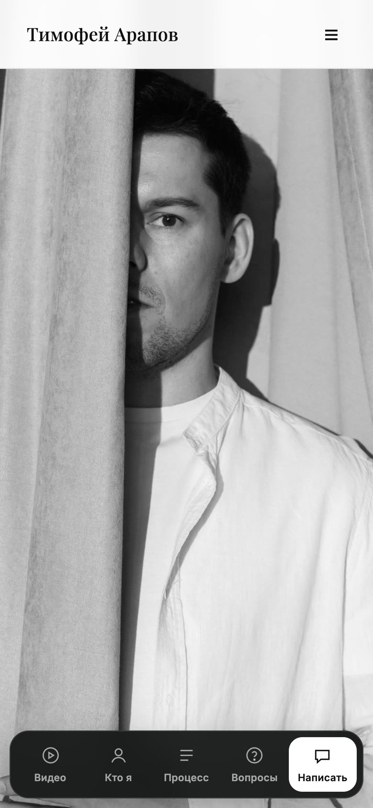
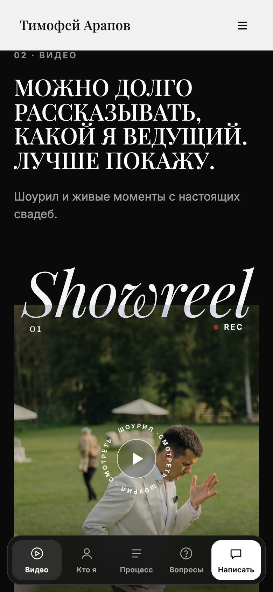
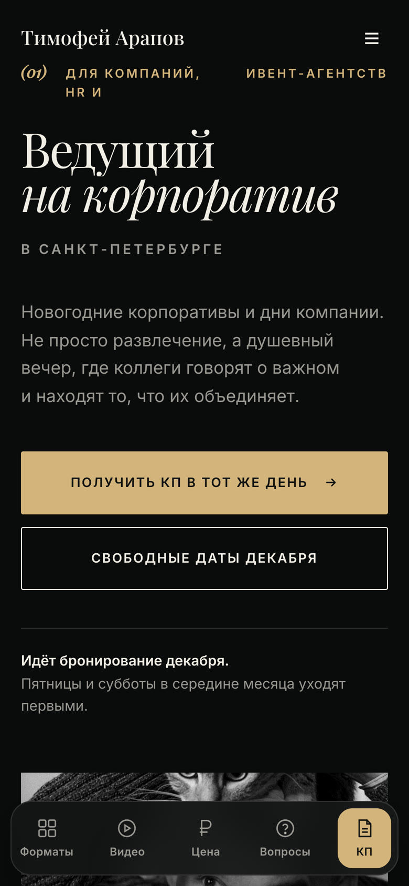
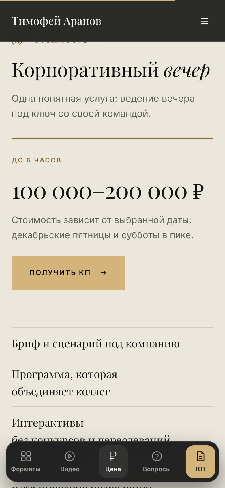
Результат
После свадебного сайта Тимофей вернулся и заказал страницу для корпоративов.